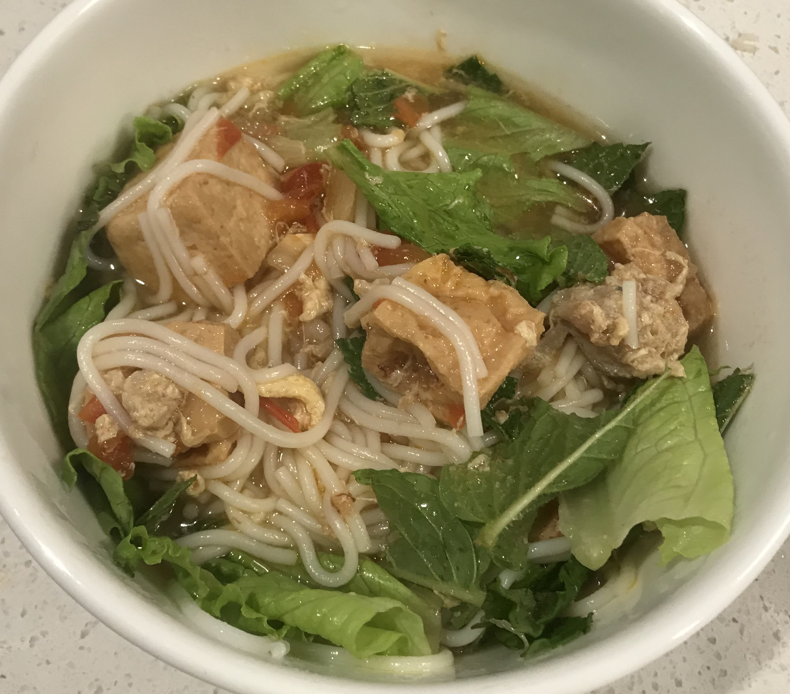
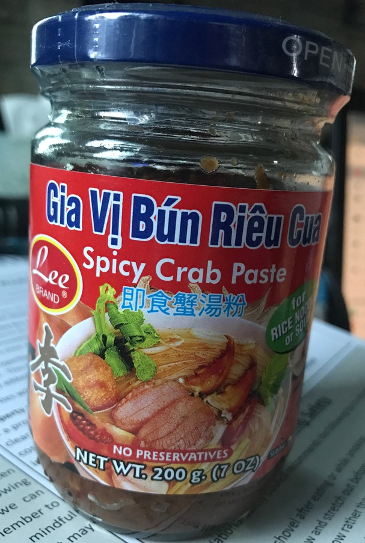

| Other | Meat | Veggie | Fruit |
|---|---|---|---|
| bun | eggs | bean sprouts | |
| chicken broth | ground pork | cilantro | |
| crab paste | shrimp | green onions | |
| mam tom | tofu | lettuce | |
| salt | tofu puffs | mint | |
| wonton soup base | shallot | ||
| tomato | |||
| yellow onion |
| instructions |
|---|
| Mix ground pork and ground shrimp at 1:2 ratio |
| Marinate meat mixture with salt, pepper, shallot and set aside in fridge |
| Fry tofu |
| Heat cubed yellow onion and then bite sized tomatoes on a medium heat, season with light salt |
| Once onion & tomato half cooked, fill with water and chicken broth |
| Bring to a boil and reduce heat to a light boil |
| Add fried tofu |
| Dilute mam tom with broth, mix, and add to broth |
| Dilute crab paste with broth, mix, and add to broth |
| Alternate between adding mam tom and crab paste, adjust broth to taste |
| For a big pot, usually half a jar of crab paste is good |
| Adjust broth to taste with wonton soup base or msg if desired |
| Mix meat mixture with beat eggs at a 2:3 ratio |
| Bring broth to a slow boil and slowly add egg and meat mixture while stirring slowly |
| Eat with bun, broth, lettuce, green onion, cilantro, mint, and bean sprouts |